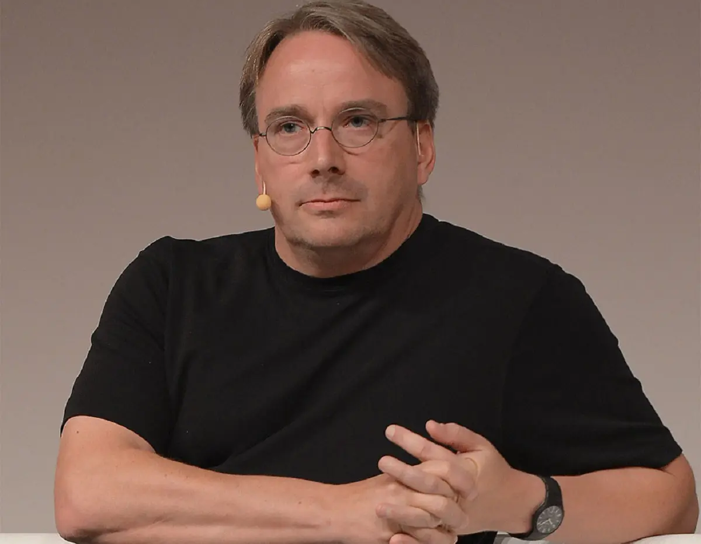

Que es GNU/Linux?
GNU/Linux es la denominación técnica y generalizada que reciben una serie de sistemas operativos de tipo Unix, que también suelen ser de código abierto, multiplataforma, multiusuario y multitarea. Estos sistemas operativos están formados mediante la combinación de varios proyectos, entre los cuales destaca el entorno GNU, encabezado por el programador estadounidense Richard Stallman junto a la Free Software Foundation, una fundación cuyo propósito es difundir el software libre, así como también el núcleo de sistema operativo conocido como «Linux», encabezado por el programador finlandés Linus Torvalds.
El desarrollo de estos sistemas operativos es uno de los ejemplos más prominentes de software libre: todo su código fuente puede ser utilizado, modificado y redistribuido libremente por cualquier persona, empresa o institución, bajo los términos de la Licencia Pública General de GNU, así como de otra serie de licencias. La idea de desarrollar un sistema operativo libre y basado en el sistema operativo Unix, se remonta a mediados de la década de 1980 con el proyecto GNU.
"Richard Matthew Stallman (Manhattan, Nueva York; 16 de marzo de 1953), con frecuencia abreviado como «rms», es un físico, programador estadounidense, activista y fundador del movimiento del software libre, del sistema operativo GNU y de la Free Software Foundation (Fundación para el Software Libre)."

"Linus Benedict Torvalds (Helsinki, Finlandia, 28 de diciembre de 19691) es un ingeniero de software finlandés-estadounidense, conocido por iniciar y mantener el desarrollo del kernel Linux, basándose en el sistema operativo libre Minix creado por Andrew S. Tanenbaum y en algunas herramientas, varias utilidades y los compiladores desarrollados por el proyecto GNU."
